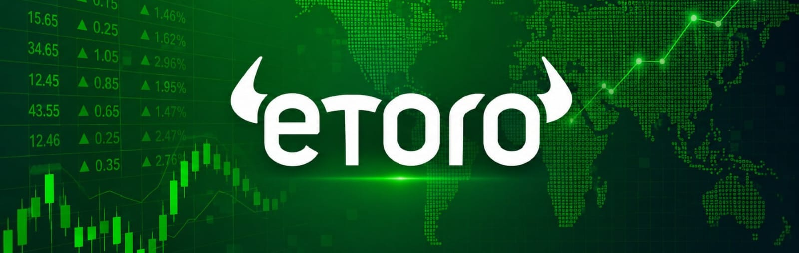
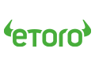

E mpezar a invertir por internet nunca había sido tan fácil. Hoy cualquier persona puede abrir una cuenta desde su celular y comprar criptomonedas, acciones o ETFs en pocos minutos. Sin embrago, esa facilidad también ha creado una nueva dificultad: elegir la plataforma correcta.
Muchos principiantes llegan al mismo punto. Buscan en diferentes fuentes “eToro vs Binance” porque ya conocen ambas plataformas, pero todavía no saben cuál les conviene más. Y esa duda es importante, porque la experiencia de una persona que empieza puede cambiar completamente dependiendo de la plataforma que use.
Algunas personas buscan simplicidad y una experiencia fácil de entender. Otras quieren acceso a cientos de criptomonedas y herramientas avanzadas.
Detrás de esas búsquedas en internet, el problema principal es que muchas comparativas son demasiado técnicas, superficiales o parecen estar dirigidas a expertos.
Por eso, en este artículo analizaremos cuál es mejor para empezar en el mundo del trading entre eToro y Binance en 2026, comparando facilidad de uso, comisiones, seguridad, funciones y experiencia general.
Además, explicaremos los términos más técnicos de forma sencilla para que la información sea fácil de entender.
- 1. ¿Qué plataforma es más fácil para principiantes en trading: eToro o Binance?
- 2. Conoce eToro y Binance: plataformas para invertir y hacer trading
- 3. eToro vs Binance: ¿cuál es más fácil de usar para principiantes?
- 4. Comisiones de eToro vs Binance: diferencias y costos en 2026
- 5. ¿Qué plataforma tiene más criptomonedas disponibles?
- 6. ¿Qué es el Copy Trading y por qué destaca eToro?
- 7. Seguridad y regulación: ¿qué plataforma es más confiable para hacer trading?
- 8. ¿Cuál es la mejor plataforma para principiantes en trading?
- 9. Lo que muchos principiantes olvidan antes de hacer trading
- 10. ¿Qué plataforma se adapta mejor a tu perfil?
- 11. ¿Cuál es la mejor plataforma para empezar en trading en 2026?
¿Qué plataforma es más fácil para principiantes en trading: eToro o Binance?
La mayoría de personas que empiezan a invertir no tienen experiencia financiera. No saben interpretar gráficos complejos, no entienden términos técnicos y muchas veces sienten miedo de perder dinero por cometer errores simples.
¿Cómo elegir bien entre eToro y Binance?
Aunque ambas plataformas permiten invertir, la experiencia que ofrecen es completamente diferente. Binance está diseñada para usuarios que quieren profundidad, variedad y herramientas avanzadas. eToro, en cambio, busca simplificar el proceso para personas que apenas están entrando al mundo de las inversiones.
Por eso muchos principiantes terminan abrumados. Abren Binance y encuentran futuros, staking, bots, órdenes avanzadas, decenas de gráficos y cientos de criptomonedas. Mientras tanto, otros usuarios sienten que eToro es más simple de entender desde el primer momento.
Cuál plataforma es “mejor” no es la pregunta que realmente deberías hacerte en términos absolutos. Ya que la ruta correcta que debes tomar es cuál plataforma se adapta mejor al nivel y necesidades de una persona que apenas está comenzando.
Conoce eToro y Binance: plataformas para invertir y hacer trading

eToro: qué es y cómo funciona para principiantes
eToro es una plataforma de inversión conocida principalmente por su enfoque sencillo y por funciones como el Copy Trading. Permite invertir en acciones, ETFs, criptomonedas y otros activos desde una interfaz diseñada para usuarios comunes.
Uno de los puntos que más ha ayudado a crecer a eToro es que intenta hacer que invertir se sienta menos complicado. La plataforma prioriza la experiencia visual, la simplicidad y la facilidad para ejecutar operaciones básicas.
Además, muchas personas llegan a eToro porque quieren empezar a invertir a largo plazo sin sentirse atrapadas en herramientas demasiado técnicas.
Binance explicado: cómo funciona esta plataforma
Binance es el exchange de criptomonedas más grande del mundo en volumen de operaciones. Su enfoque principal está en el mercado crypto y ofrece una enorme cantidad de herramientas, funciones y activos digitales.
Binance permite comprar, vender, intercambiar y almacenar criptomonedas, además de acceder a funciones avanzadas como trading con apalancamiento, staking y mercados derivados.
Para usuarios avanzados, eso representa una gran ventaja. Para principiantes, puede convertirse en una experiencia difícil de entender durante las primeras semanas.
eToro vs Binance: ¿cuál es más fácil de usar para principiantes?
La facilidad de uso es probablemente el factor más importante para un principiante.
Aquí eToro tiene una ventaja clara.
Su interfaz está diseñada para que una persona sin experiencia pueda navegar sin sentirse perdida. Las opciones están organizadas de forma más simple y el proceso de compra suele ser más intuitivo.
En Binance ocurre lo contrario. La plataforma ofrece muchas herramientas al mismo tiempo y eso puede generar confusión. Un usuario nuevo puede entrar y no entender la diferencia entre Spot, Futures, Earn o Margin.
Eso no significa que Binance sea mala. Significa que está diseñada para usuarios que quieren más control y más profundidad.
Para alguien que apenas quiere aprender a invertir sin sentirse abrumado, eToro suele ofrecer una curva de aprendizaje más cómoda.
Comisiones de eToro vs Binance: diferencias y costos en 2026
En términos de comisiones puras, Binance suele ser más barata.
Sus tarifas de trading crypto son bajas y están pensadas para personas que realizan muchas operaciones. Por eso traders experimentados suelen preferir Binance cuando buscan minimizar costos.
Sin embargo, muchos principiantes se enfocan demasiado en las comisiones y olvidan otro factor más importante: la experiencia de uso.
Una plataforma más barata no necesariamente será mejor si la persona termina confundida, cometiendo errores o abandonando por frustración.
En eToro, algunos costos pueden ser más altos dependiendo del activo y del tipo de operación, pero parte de ese enfoque está orientado hacia la simplicidad y la experiencia general.
Para un principiante, la diferencia de comisiones no suele ser tan importante como aprender a invertir correctamente desde el inicio.
¿Qué plataforma tiene más criptomonedas disponibles?
En este apartado Binance gana de forma contundente.
La plataforma tiene acceso a cientos de criptomonedas y constantemente agrega nuevos proyectos. Eso la convierte en una de las plataformas favoritas para personas que quieren explorar el mercado crypto en profundidad.
eToro tiene una selección mucho más limitada.
Eso puede parecer una desventaja, pero también reduce el ruido para los principiantes. Muchas personas nuevas terminan perdiendo dinero porque compran proyectos que no entienden simplemente porque existen demasiadas opciones.
En ese sentido, la simplicidad de eToro puede ayudar a mantener un enfoque más conservador durante las primeras etapas.
¿Qué es el Copy Trading y por qué destaca eToro?
El Copy Trading permite copiar automáticamente las operaciones de otros inversores dentro de la plataforma.
Esta función se volvió una de las características más conocidas de eToro porque ofrece una experiencia diferente a la del trading tradicional.
En lugar de operar completamente solo, el usuario puede seguir estrategias de inversores con experiencia y observar cómo gestionan su portafolio, lo que aumenta las oportunidades de aprendizaje durante el proceso.
Razones por las que el Copy Trading llama la atención de nuevos usuarios
Muchos principiantes sienten miedo al tomar sus primeras decisiones financieras. El Copy Trading reduce parcialmente esa sensación porque permite aprender observando a otros inversores.
Sin embargo, también es importante entender que copiar operaciones no elimina el riesgo. Ningún inversor gana siempre y ningún resultado está garantizado.
Aun así, para personas nuevas en el mercado, esta función hace que eToro se sienta más accesible y menos intimidante que Binance.
Seguridad y regulación: ¿qué plataforma es más confiable para hacer trading?
La seguridad es uno de los factores más importantes al elegir una plataforma financiera.
eToro tiene una fuerte presencia regulatoria en distintos mercados y suele transmitir una imagen más enfocada hacia inversión tradicional y largo plazo.
Binance, aunque es extremadamente popular, ha enfrentado más debates regulatorios en distintos países debido al tamaño y complejidad de sus operaciones globales.
Para muchos principiantes, eso influye psicológicamente. Algunas personas se sienten más cómodas usando una plataforma que perciben como más simple y regulada.
Sin embargo, ambas plataformas cuentan con medidas de seguridad importantes como autenticación en dos pasos y protección de cuentas.
La diferencia principal está más en la experiencia y percepción del usuario que en la existencia de herramientas básicas de seguridad.
¿Cuál es la mejor plataforma para principiantes en trading?
eToro
Suele ser mejor si:
-
✓Quieres una experiencia más simple
-
✓Buscas invertir a largo plazo
-
✓Prefieres una plataforma fácil de entender
-
✓Deseas usar funciones como Copy Trading
Binance
Suele ser mejor si:
-
✓Quieres enfocarte profundamente en criptomonedas
-
✓Buscas muchas herramientas
-
✓Necesitas acceso a cientos de activos
-
✓Planeas aprender trading avanzado
Importante: El error más común es pensar que la plataforma más completa automáticamente es la mejor. Para un principiante, demasiadas opciones pueden convertirse en un problema. Muchas veces la mejor plataforma es la que permite empezar sin sentirse perdido.
Lo que muchos principiantes olvidan antes de hacer trading
Después de comparar eToro y Binance, es fácil caer en una pregunta común: cuál puede generar más dinero. Sin embargo, esa suele ser la pregunta equivocada para alguien que está empezando.
Ninguna plataforma tiene un botón oculto para crear resultados rápidos y ninguna reemplaza el proceso de aprendizaje que requiere invertir o hacer trading.
Construir estabilidad financiera normalmente no ocurre en semanas ni en un mes. Tanto eToro como Binance son herramientas; la diferencia es que cada una ofrece una experiencia distinta según el perfil del usuario.
Una plataforma puede facilitar el proceso de aprendizaje, mientras otra puede ofrecer más profundidad y herramientas avanzadas, pero ninguna elimina el riesgo que existe en los mercados.
Toda inversión y toda operación tienen un nivel de riesgo que debe asumirse con responsabilidad. Por eso muchas personas prefieren comenzar con objetivos claros, una gestión de riesgo definida y expectativas realistas, en lugar de perseguir movimientos rápidos o decisiones impulsivas.
Si alguna de las dos plataformas llamó tu atención, la decisión probablemente no debería basarse únicamente en cuánto podrías ganar.
También puede ser útil pensar cuál te permitirá aprender mejor, entender el mercado y desarrollar un crecimiento progresivo sin estancarte, manteniendo una estrategia durante el tiempo necesario.
Si estás empezando, necesitas saber que la plataforma perfecta no es la que tiene más funciones y termina haciéndote sentir perdido. Muchas veces es la que permite avanzar paso a paso, sin sentir que estás llegando tarde, y construir conocimiento antes de asumir riesgos mayores.
¿Qué plataforma se adapta mejor a tu perfil?
Los primeros meses al momento de iniciar a invertir en una platafomar es el proceso que define si contunas o abandonas, ya que la experiencia en conocimientos adquiridos es lo que te poner un paso adelante.
Por lo tanto la comparación entre eToro y Binance no se trata únicamente de comisiones o cantidad de criptomonedas. Si no, donde puedas desarroyarte mejor en tus inicios.
Binance ofrece más potencia, más herramientas y más profundidad. eToro ofrece más simplicidad, una curva de aprendizaje menos agresiva y funciones pensadas para personas que todavía están aprendiendo.
Por eso ambas plataformas siguen creciendo. No compiten exactamente por el mismo tipo de usuario.
Mientras Binance atrae usuarios que quieren dominar el ecosistema crypto, eToro se enfoca más en personas que quieren comenzar a invertir sin complicarse desde el primer día.
¿Cuál es la mejor plataforma para empezar en trading en 2026?
Para un principiante absoluto, eToro suele ofrecer una experiencia más amigable, simple y fácil de entender. Binance, por otro lado, puede ser una excelente opción para quienes desean profundizar en criptomonedas y aprender herramientas más avanzadas con el tiempo.
Lo importante no es empezar con la plataforma más compleja, sino con aquella que permita aprender, entender el mercado y desarrollar hábitos financieros de forma progresiva.
Invertir no depende únicamente de encontrar la plataforma “perfecta”. Depende de tomar decisiones informadas, aprender constantemente y pensar a largo plazo.
Recomendación final
Si estás empezando desde cero y tu prioridad es aprender sin complicarte, eToro suele ser la opción más accesible.
Su enfoque en simplicidad y funciones como Copy Trading lo hacen más amigable para quienes dan sus primeros pasos.
Mientras eToro destaca por su experiencia intuitiva y enfoque social, Binance sobresale por su variedad de herramientas en un entorno más técnico.

Operar implica riesgos. Tu capital puede estar en riesgo.